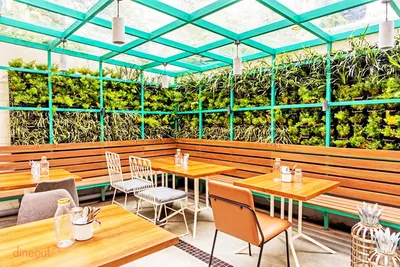
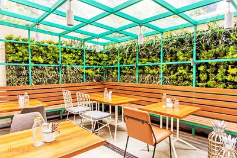

Welcome to Café The Daily Cafe your perfect escape from the hustle and bustle of daily life. Nestled in the heart of Kolkata our café is more than just a place to grab a cup of coffee – it’s a cozy retreat where you can relax, connect, and indulge. Whether you’re here to kickstart your morning, enjoy a quiet afternoon, or catch up with friends over delicious treats, we’re delighted to have you.
At Café The Daily Cafe, every detail is crafted with care to create a warm and inviting atmosphere. The aroma of freshly brewed coffee fills the air, setting the tone for your experience. Our menu features an array of handcrafted beverages, from rich espressos to creamy lattes and refreshing teas, all made using the finest ingredients. For those with a sweet tooth or a love for baked delights, our selection of pastries, cakes, and savory snacks promises to leave you satisfied.
What truly sets us apart is our commitment to community and hospitality. Our team is dedicated to making every visit memorable, serving you with genuine warmth and care. Whether you’re here for a quick bite, a productive work session, or simply to unwind, our cozy corners, soft music, and friendly service will make you feel right at home.
Thank you for choosing Café The Daily Cafe. We’re honored to be a part of your day and look forward to serving you with the perfect blend of comfort, quality, and a touch of joy. So, grab a seat, savor the flavors, and let us make your time here special. Welcome to Café Bliss – where every sip tells a story and every moment feels like home!
→ Explore our Menu! 😊
M E N U
Visit Us Soon ! !😚
 

F 0 0 D B L 0 G !!